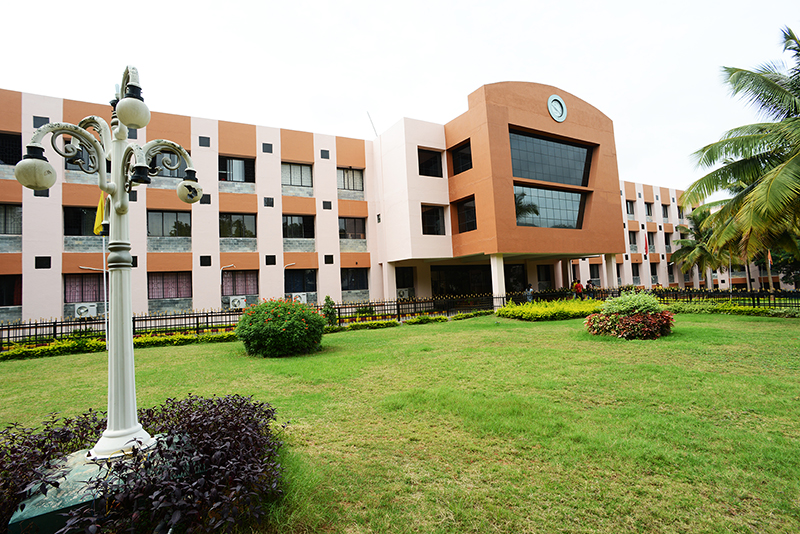

COLUMBIA UNIVERSITY IN THE CITY OF NEW YORK
MS. IN DATA SCIENCE
My pursuit of knowledge led me to Columbia University, where I am currently completing my Master of Science in Data Science. This prestigious program has immersed me in a world of cutting-edge data analysis and machine learning. I've had the privilege of studying subjects like Applied Machine Learning, Natural Language Processing, and Deep Learning for Computer Vision. These experiences have not only expanded my skill set but have also deepened my passion for harnessing data to solve complex problems.

NITTE MEENAKSHI INSTITUTE OF TECHNOLOGY
BE. IN COMPUTER SCIENCE
My journey into the world of computer science began at Nitte Meenakshi Institute of Technology in Bangalore, India. Here, I earned my Bachelor of Engineering in Computer Science, an experience that laid a strong foundation for my career. I was honored to receive the Excellence Award for academic excellence. During my time here, I delved into a comprehensive curriculum covering topics like Big Data Analytics, Machine Learning, and Artificial Intelligence. These formative years equipped me with the fundamental skills and knowledge that continue to shape my path in the tech world..